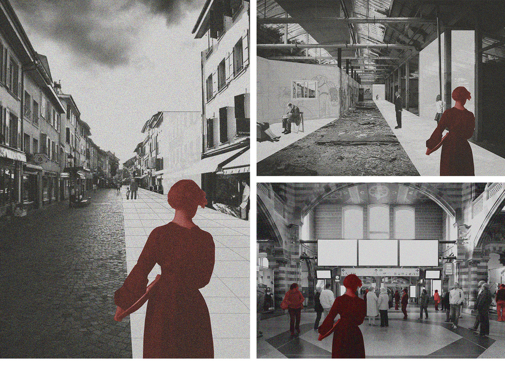
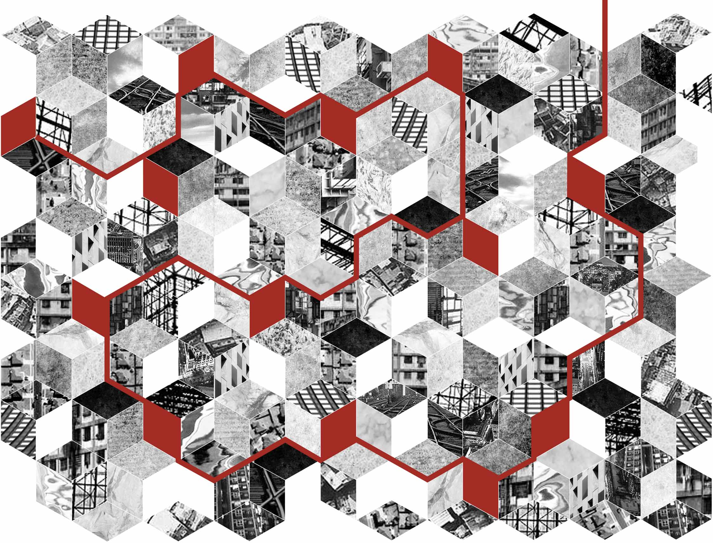
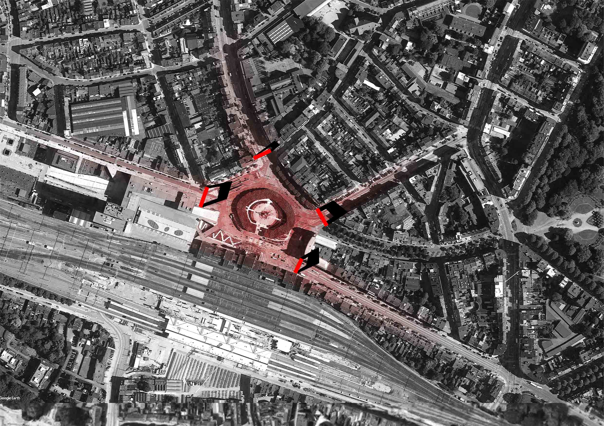
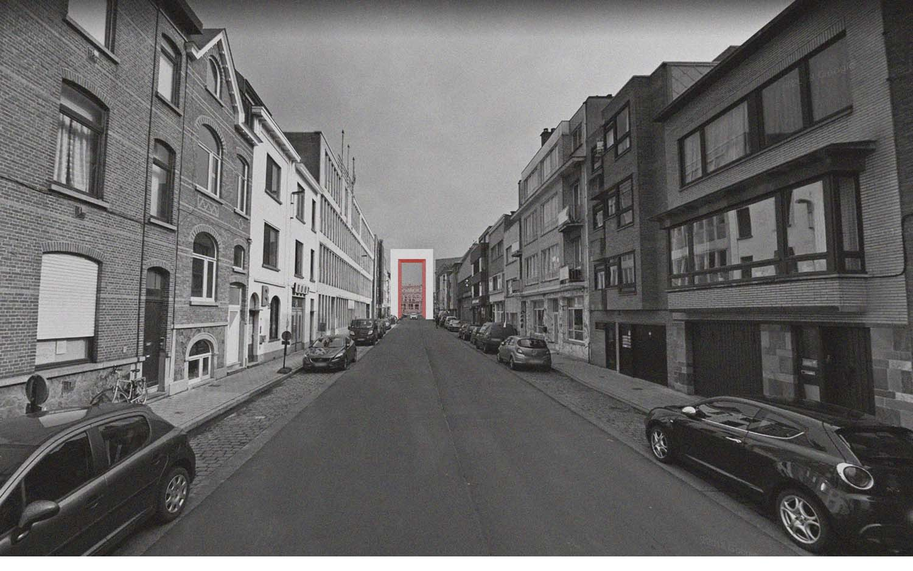

Nomadic Settlements / Sint Pieters: a timeless station
| _university | KU Leuven, Sint Lucas in Ghent, Belgium |
| _semester | International MSc in Architecture: Resilient and Sustainable Strategies, first semester workshop |
| _year | 2018 |
| _location | Sint-Pieters Station, Ghent, Belgium |
| _author(s) | Alberto Bovo, Endri D'Berberi, Eduardo Dugaich, Giulia Malley, Orçun Yazıcı |
Contradictory trends of strong borders and extensive nomadic lifestyle, clash to create a reality
where a new transnational system (Loop) facilitates a movement in between borders. It is maintained by
and provides for nomadic people who need to constantly move to develop their identity. This global system
will be tied to cities through stations that are gateways between nomadic and non-nomadic realities.
In a projected future, year 2040, there will be tight administrative borders combined with an extensive
amount nomadic shifts (people who constantly live on the move), generating an independent system called
“nomadic settlements”. This system will initially be utilized by the people who were refused the right
to move. Hence, denied the opportunity to develop. Namely Loop, this independent system will be available
to future nomads, all those general people who will be attracted by the idea of life on the move.
It facilitates borderless movement, due to the fact that these people will never reach their “final destination”,
therefore they won’t be stopped by any administrative borders. Its structure is inspired by an electronic
circuit, in which components work as stations and flow as impulses. Several stations arranged around the
world will provide the modern nomads with specific amenities (e.g. cities that are already following this
trend: London Banking, L.A. Technology, New York Law and Ghent Education). In the microsystem of Ghent,
the station of Ghent Sint Pieters will be a catalyst around facilities. In this scenario, nomads will be
provided the basic needs to stay in the city for a short period of time, in order to develop themselves by
using the infrastructure that the city already provides, such as universities, research centers, etc. Basic
needs will be supplied by spaces that are already abandoned by the actual society. These vacancies would
then be used for the temporary character of the future nomads, redefining their identity. Surrounded by and
related with vacancies, the St Pieters station is considered to be the only space in the city that will
maintain constant activity. The station is projected to stand as a symbol of timelessness and never
become vacant.



